ActD Consulter ses activités
UMLActivity
Untitled
::
Activité
::
ActD Consulter ses activités
Description
none
Diagrams

ActD Consulter ses activités
Groups
Utilisateur
SI
BDD
Edges
(InitialNode1→Voir les activités)
(Voir les activités→Demander les activités de l'utilisateur)
(Demander les activités de l'utilisateur→Envoyer la liste des activités de l'utilisateur)
(Envoyer la liste des activités de l'utilisateur→Afficher la liste des activités)
(Afficher la liste des activités→ActivityFinalNode1)
Properties
Name
Value
name
ActD Consulter ses activités
stereotype
null
visibility
public
isReentrant
true
isReadOnly
false
isSingleExecution
false
Owned Elements
ActD Consulter ses activités